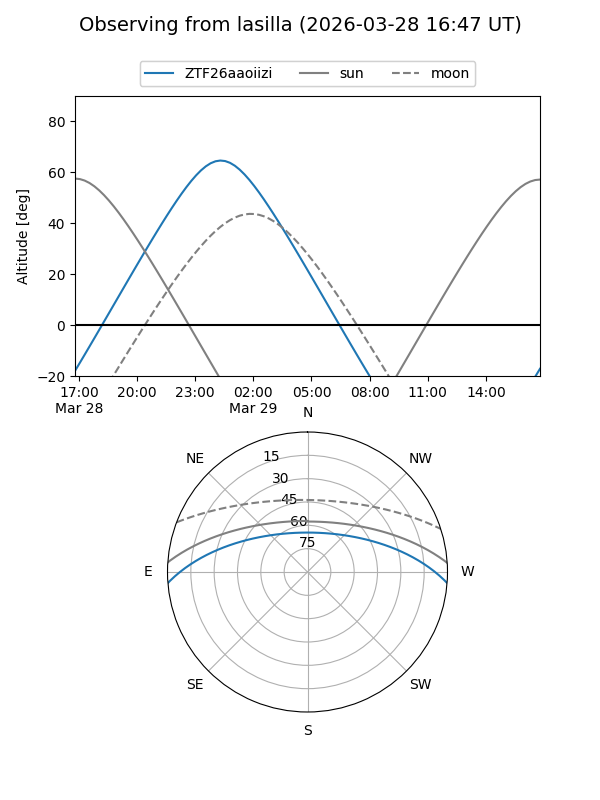
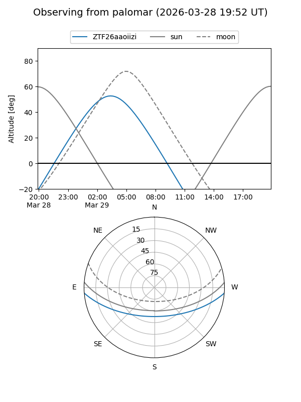

ZTF26aaoiizi
Target ZTF26aaoiizi at 2026-03-29 06:25
Aliases and brokers:
FINK: link
Lasair: link
ALeRCE: link
alt names
ZTF26aaoiizi (ztf,fink_ztf)
Coordinates:
equatorial (ra, dec) = 120.1361,-3.82960
equatorial (HMS+DMS) = 08:00:32.65,-03:49:46.57
galactic (l, b) = (224.4735,+13.48953)
Flags:
Photometry:
last ztfg=15.61
1 ztfg detections
Lightcurve
Visibility


Additional plots